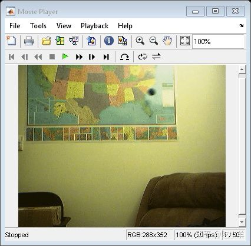
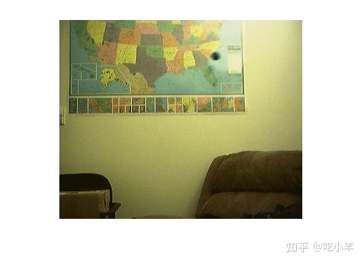
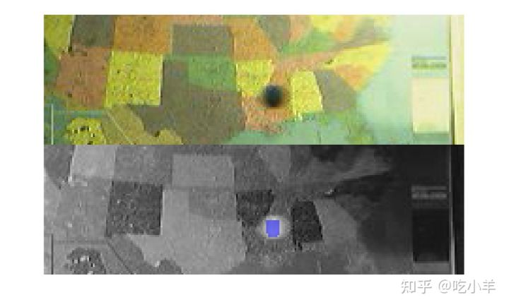
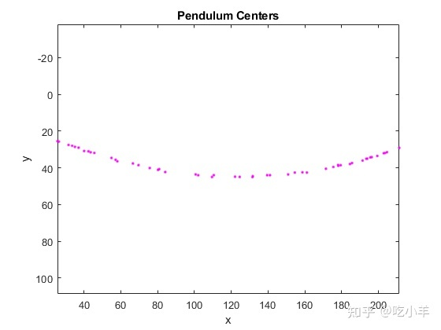
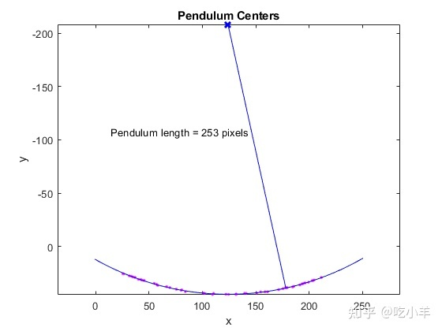

Home
本示例向您展示如何计算运动中的钟摆的长度。您可以使用 Image Acquisition Toolbox™ 按时间序列捕获图像并使用 Image Processing Toolbox™ 进行分析。
步骤 1：获取图像
加载运动钟摆的图像帧。MAT 文件pendulum.mat中的帧是使用 Image Acquisition Toolbox 中的以下函数获取的。
% Access an image acquisition device (video object).
% vidimage=videoinput('winvideo',1,'RGB24_352x288');
% Configure object to capture every fifth frame.
% vidimage.FrameGrabInterval = 5;
% Configure the number of frames to be logged.
% nFrames=50;
% vidimage.FramesPerTrigger = nFrames;
% Access the device's video source.
% src=getselectedsource(vidimage);
% Configure device to provide thirty frames per second.
% src.FrameRate = 30;
% Open a live preview window. Focus camera onto a moving pendulum.
% preview(vidimage);
% Initiate the acquisition.
% start(vidimage);
% Wait for data logging to finish before retrieving the data.
% wait(vidimage, 10);
% Extract frames from memory.
% frames = getdata(vidimage);
% Clean up. Delete and clear associated variables.
% delete(vidimage)
% clear vidimage
% load MAT-file
load pendulum;
第 2 步：使用 IMPLAY 探索视频序列
运行implay命令探索视频序列。
implay(frames);

第 3 步：选择钟摆摆动的区域
您可以看到钟摆在图像系列中每帧的上半部分摆动。创建一系列仅包含钟摆摆动区域的新的视频帧。
要使用imcrop裁剪一系列帧，首先在一个帧上执行imcrop并存储其输出图像。然后使用先前输出的图像尺寸创建一系列帧区域。为方便起见，使用由imcrop加载的pendulum.mat里的rect。
nFrames = size(frames,4); first_frame = frames(:,:,:,1); first_region = imcrop(first_frame,rect); frame_regions = repmat(uint8(0), [size(first_region) nFrames]); for count = 1:nFrames frame_regions(:,:,:,count) = imcrop(frames(:,:,:,count),rect); end imshow(frames(:,:,:,1))

第 4 步：在每一帧中分割钟摆
请注意，钟摆比背景暗得多。可以通过将帧转换为灰度，使用imbinarize做阈值处理，并使用imopen和imclearborder去除背景结构。
初始化数组以包含分割的钟摆框架。
seg_pend = false([size(first_region,1) size(first_region,2) nFrames]);
centroids = zeros(nFrames,2);
se_disk = strel('disk',3);
for count = 1:nFrames
fr = frame_regions(:,:,:,count);
gfr = rgb2gray(fr);
gfr = imcomplement(gfr);
bw = imbinarize(gfr,.7); % threshold is determined experimentally
bw = imopen(bw,se_disk);
bw = imclearborder(bw);
seg_pend(:,:,count) = bw;
montage({fr,labeloverlay(gfr,bw)});
pause(0.2)
end

第 5 步：在每一帧中找到分割钟摆的中心
您可以看到钟摆的形状在不同的帧中有所不同。这不是一个严重的问题，因为您只需要它的中心。您将使用钟摆中心来计算钟摆的长度。
使用regionprops计算摆的中心。
pend_centers = zeros(nFrames,2);
for count = 1:nFrames
property = regionprops(seg_pend(:,:,count), 'Centroid');
pend_centers(count,:) = property.Centroid;
end
使用plot显示钟摆中心。
x = pend_centers(:,1);
y = pend_centers(:,2);
figure
plot(x,y,'m.')
axis ij
axis equal
hold on;
xlabel('x');
ylabel('y');
title('Pendulum Centers');

第 6 步：通过在钟摆中心拟合圆来计算半径
重写圆的基本方程：
(x-xc)^2 + (y-yc)^2 = radius^2
其中(xc,yc)是圆心，由参数a，b，c定义如下：
x^2 + y^2 + a*x + b*y + c = 0
其中a = -2*xc, b = -2*yc, c = xc^2 + yc^2 - radius^2。
您可以使用最小二乘法求解参数a、b和c。将上面的等式改写为：
a*x + b*y + c = -(x^2 + y^2)
也可以改写为：
[x y 1] * [a;b;c] = -x^2 - y^2.
使用反斜杠( \) 运算符求解此方程。
圆半径是钟摆的长度（以像素为单位）。
abc = [x y ones(length(x),1)] \ -(x.^2 + y.^2); a = abc(1); b = abc(2); c = abc(3); xc = -a/2; yc = -b/2; circle_radius = sqrt((xc^2 + yc^2) - c); pendulum_length = round(circle_radius) pendulum_length = 253
在摆心图上叠加圆和圆心。
circle_theta = pi/3:0.01:pi*2/3;
x_fit = circle_radius*cos(circle_theta)+xc;
y_fit = circle_radius*sin(circle_theta)+yc;
plot(x_fit,y_fit,'b-');
plot(xc,yc,'bx','LineWidth',2);
plot([xc x(1)],[yc y(1)],'b-');
text(xc-110,yc+100,sprintf('Pendulum length = %d pixels', pendulum_length));

======================================================================
我的测试结果及程序
下面是我测试的代码：

注：本文根据MATLAB官网内容修改而成。